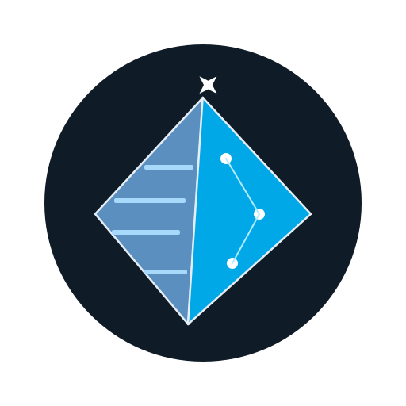

tele-kb-bot¶
Chat with an LLM from your phone. Search a local knowledge base. All in a single binary.


Quick Start¶
Three commands. After setup, run tele-kb-bot start and message your bot on Telegram.
Prefer non-interactive?
Set TELEGRAM_BOT_TOKEN=xxx and run tele-kb-bot setup --non-interactive.
What You Get¶
- Chat from your phone — send messages, photos, documents, voice notes. The bot processes them via an LLM and replies on Telegram.
- Persistent memory — conversations and facts stored as plain markdown files, searchable across sessions.
- Private & secure — runs on your own machine. Zero secrets in the binary. User whitelist enforced.
- Single binary — no Node.js, no Python, no runtime to install. Just a compiled binary.
- Auto-restart — launchd keeps it alive across reboots and crashes.
- Multi-platform — macOS, Linux, and Windows.
How It Works¶
flowchart LR
User["You on Telegram"]
Bot["tele-kb-bot"]
LLM["LLM"]
Memory["Knowledge Base"]
User --> Bot
Bot <--> LLM
Bot <--> MemoryA Telegram bot receives your messages, passes them to an LLM with context from a local knowledge base, and sends the response back. The bot, LLM client, and memory search are packed into a single binary.
Next Steps¶
-
Getting Started
Get tele-kb-bot running in under a minute.
-
How-to Guides
Deploy 24/7, build from source, configure with Nix.
-
Reference
CLI commands, config schema, architecture overview.
-
Design Decisions
Why certain choices were made — documented as ADRs.